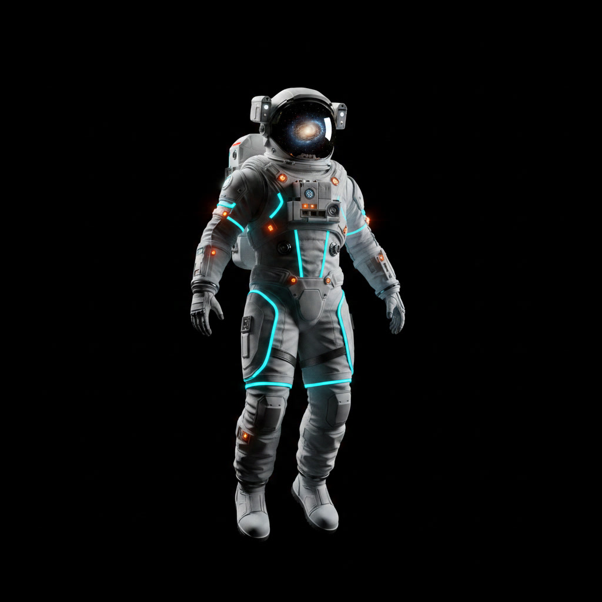
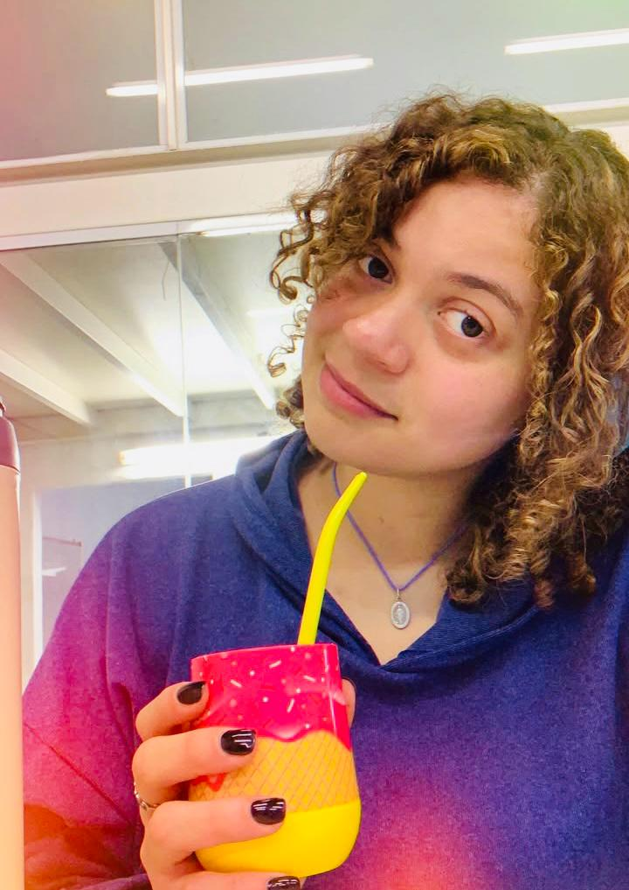

Origin Protocol

My journey into Intelligent Systems didn't start in a standard software lab; it began subsurface. As a student engineer, I built neural network algorithms to extract weak predictive signals—predicting water, gas, and hydrocarbons—out of chaotic, noise-heavy seismic and well-log datasets. That was the exact moment I realized the profound power of neural networks: the ability to engineer absolute clarity out of natural disorder.
Today, I translate that exact geophysical rigor into enterprise operations. My engineering philosophy is straightforward but never simple: I deeply map the business context first, then architect the data foundations to scale. I design robust, cost-effective agentic workflows and automated pipelines, knowing precisely where to optimize computational overhead and where to strategically position human-in-the-loop validation. In corporate ecosystems, unstructured data is just another chaotic signal buried in operational noise—and I build the systems that make it viable.
To balance the rigidity of production code, I cultivate mental elasticity through constant reading—interpreting data, environments, and human contexts across multiple languages—and physical movement. I view the dimension of time as infinite, offering boundless contexts to reframe complex technical problems. Like a minimalist explorer navigating dark space, I thrive where structured logic meets the fluid boundaries of next-generation artificial intelligence.
Core Architecture
Three engineering pillars covering the full spectrum from agentic AI pipelines to production-grade data systems and interactive analytics frontends.
Pillar 01
Pillar 02
Pillar 03
Production Systems
Each system documented under a structured design narrative: Context → Stack → Engineering Rigor → Impact & Metrics.
An end-to-end machine learning system built to solve multi-class imbalances (Home wins vs. Draws) and weak predictive signals in traditional sports ranking systems.
◆ Engineering Rigor — Noise Filtering
"The Morocco Problem" — Engineered a Player Impact Score (PIS) pipeline that filtered historical team Elo data against current squad metrics. Removed high-variance anomalies by drop-filtering 28% of active records lacking sufficient baseline playtime, mitigating "garbage in, garbage out" constraints.
▼ Impact & Metrics
Outperformed baseline FIFA rankings in weighted F1-score. Features an Elo Engine (964 historical matches) paired with an LLM text-generation engine.
A multi-country forecasting pipeline processing raw, unstructured enterprise transaction logs to predict inventory demands across hundreds of SKUs over an 8-week horizon.
◆ Engineering Rigor — Noise Filtering
Engineered an 80/24 Pareto extraction model to isolate top-performing revenue SKUs without losing macro-trends. Mitigated downstream feature corruption by zero-filling missing sale intervals rather than dropping rows, and accurately calculated net demand by parsing raw order cancellations as genuine demand intent signals.
▼ Impact & Metrics
Ingests and processes over 1 Million raw enterprise transaction logs. Implemented strict walk-forward validation to ensure zero data leakage before weekly production runs.
A specialized financial forecasting web tool designed to automate and democratize hyperparameter optimization for statistical models.
◆ Engineering Rigor — Noise Filtering
Automated hyperparameter grid-searching over complex mathematical parameters (p, d, q, P, D, Q, s), isolating seasonality and non-stationarity factors natively to eliminate trial-and-error variances.
▼ Impact & Metrics
Stripped away statistical complexity, enabling non-technical operators to run rigorous compliance forecasts. Shipped within an agile labor simulation setting (No Country).
A suite of computational climate data pipelines built to process massive, multi-dimensional global proxy records spanning 800,000 years of Earth history.
◆ Engineering Rigor — Noise Filtering
Dealt with irregular temporal samplings typical of natural proxy records. Resolved data distortions using systematic binning, multi-dimensional PCA modeling, and oxygen isotope normalizations — applying the core geophysical principle of filtering subsurface noise to capture structural signals.
▼ Impact & Metrics
Open-source resource co-created under the ClimateMatch Academy structure. Successfully modeled EPICA Dome C data, LGMR thermal trends, and PAGES2K proxy grids.
Get in Touch
Available for AI/ML engineering roles, agentic automation consulting, and enterprise data systems. Based in Argentina — open to remote global opportunities.